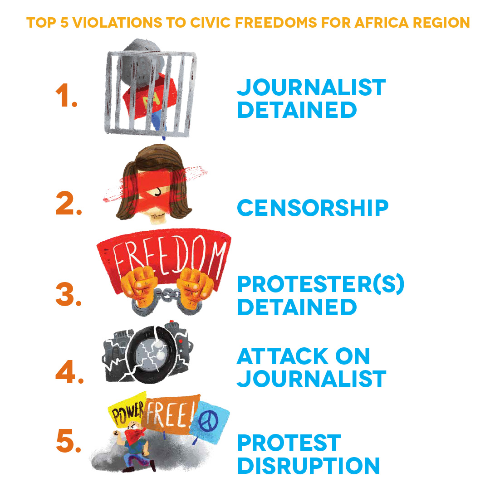

People Power Under Attack 2021 - Africa
AFRICA
Of Africa’s 49 countries, six are rated as closed, 24 as repressed and 13 as obstructed. Civic space is open in the island states of Cabo Verde and São Tomé and Principe and narrowed in four countries. Since the previous update, civic space ratings have deteriorated in Benin[2], Botswana, Mali, Mozambique and South Africa.
Ratings overview
Although we have documented serious civic space restrictions in South Africa over several years, this year saw the continuation of such deterioration, pushing the country into the obstructed category. The downgrading of South Africa is due to the use of excessive force against protesters, escalating harassment, arbitrary detention and killings of HRDs.
The use of excessive and lethal force was documented in various instances, including in March 2021 when Mthokozisi Ntumba, a bystander, was shot dead by police as they dispersed a protest by students from Wits University. The authorities have also used excessive force against environmental defenders from mining communities who have held anti-mining protests.
Whistle-blowers and trade union leaders risk being targeted for assassination. Babita Deokaran, a key witness in a probe into fraudulent procurement of COVID-19 personal protective equipment (PPE) by high-level officials, was shot and killed in what investigators believe was a targeted hit. Similarly, Malibongwe Mdazo, an organiser of the National Union of Metalworkers of South Africa, was publicly gunned down amidst a labour dispute in August 2021.
Journalists also face surveillance from the authorities, as seen when Jeff Wicks, a journalist from News24, had his phone bugged with a phone tracking device in a bid to establish his sources, following his coverage of discontent within the police force.
Additionally, the situation for LGBTQI+ people in South Africa has been deteriorating. Despite a progressive legislative framework for LGBTQI+ rights, LGBTQI+ campaigners and individuals live and operate in a hostile environment characterised by hate speech, death threats and killings.
Those responsible for these violations, both state and non-state groups, are rarely held to account. For instance, although the country commemorated, in August 2021, the ninth anniversary of the Marikana Massacre, which claimed the lives of 34 mineworkers who were protesting for fair wages and left more than 70 others injured, the survivors of the massacre and the families of the slain miners are yet to see justice.
Botswana is downgraded to obstructed after the country saw an increasing number of arrests and assaults of protesters who called for accountability from the government, exposed government corruption or complained about economic downturn, among other issues. The flawed provisions of the Public Order Act, which the authorities interpret as making it a requirement to obtain a permit to protest, continues to be used to hinder the right to peaceful assembly. Journalists are subjected to surveillance, with reports showing that the government uses spyware to tap into and siphon off data from journalists’ devices, as was the case for journalist Oratile Dikologang. It has also become a usual practice for Botswana security forces to arbitrarily arrest journalists and confiscate their devices.
Since disputed legislative elections in March and April 2020, Mali has experienced two military coups. Its civic space rating is downgraded from obstructed to repressed. Military officers under the banner of the National Committee for the Salvation of the People toppled the government in a military coup on 18 August 2020 following mass anti-government protests, led by the coalition Mouvement du 5 juin - Rassemblement pour le Mali, that took place in June and July 2020; at least 11 people were killed and at least 80 injured between 10 and 12 July 2020 while access to the internet was restricted. The second coup, on 24 May 2021, saw members of the armed forces arrest transitional President Bah Ndwah and Prime Minister Moctar Ouane following the announcement of a government reshuffle. Meanwhile, violence reigns in the centre and north of the country, with human rights abuses perpetrated by armed non-state forces, such as Islamist armed groups, and government security forces.
Mozambique’s civic space is downgraded from obstructed to repressed. The country’s civic space is characterised by unwarranted restrictions on the freedom of expression and a deteriorating environment for journalists and civil society activists. Physical attacks, intimidation and harassment of journalists and HRDs have become increasingly common. Community radio journalist Ibraimo Abu Mbaruco’s whereabouts are still unknown since his disappearance in April 2020 in Palma, Cabo Delgado. In his last text message, he reportedly said he was ‘surrounded by the military’. In October 2019, Anastácio Matavel, civil society activist and founder and director of FONGA-Gaza NGO Forum, was shot and killed in Xai-Xai, Gaza Province, after attending a training session on election monitoring. In August 2020, the headquarters of media outlet Canal de Moçambique were broken into and set on fire with petrol bombs. The media outlet had previously investigated and reported on corruption. Meanwhile, the authorities have denied CSOs and journalists access to work in and report from areas affected by the armed insurgency in Cabo Delgado and neighbouring provinces where there is a heightened presence of internally displaced people.
Civic Space restrictions
In Africa, the most common civic space violation registered by the CIVICUS Monitor during the reporting period was the detention of journalists, followed by censorship, the detention of protesters, attacks on journalists and the disruption of protests.
Detention of journalists
The CIVICUS Monitor documented the detention of journalists in at least 24 countries in Africa, making it again the top violation in the region, as was the case in 2020.
 In many cases, journalists were detained because their reporting criticised the authorities, or focused on issues considered sensitive, such as corruption. Several journalists were arrested in Somalia, where media and journalists face an ongoing and unrelenting onslaught. Police officers arrested freelance journalist Ahmed Botan Arab in February 2021 after he posted a Facebook video showing residents’ interviews commenting on a speech by Said Abdullahi Deni, president of Puntland state. He was detained for two days before being released without charge. In Sudan, journalist Osman Hashim was detained by police in Port Sudan in September 2021 and later released on bail in relation to his Facebook posts alleging corruption in the former governor’s office. Police in Chad raided radio station Radio FM Liberté and arrested 30 journalists in November 2020, when the radio station planned to interview the organisers of the Citizen Forum, a citizen-organised alternative to the government-led National Inclusive Forum. In Zimbabwe, journalist Hopewell Chin’ono spent three weeks in prison for a tweet on alleged police brutality during the enforcement of a COVID-19 lockdown in January 2021. He was charged for ‘communicating falsehoods prejudicial to the state’, despite this being a provision that was repealed by the Zimbabwean Constitution in 2014.
The detention of and attacks against journalists during electoral periods or while covering conflicts remained a concern in Africa. Following disputed and controversial presidential elections in Côte d’Ivoire, police arrested broadcast journalist Yao Alex Hallane Clément, despite him identifying himself as a journalist, in November 2020, along with 20 other people, at the residence of opposition presidential candidate Henri Konan Bédie, where he was covering a press conference. The journalist was held for five days. In Ethiopia, 15 media workers were detained between 30 June and 2 July 2021 following general elections on 21 June 2021 and amid a worsening conflict in Tigray and other regions.
In several countries, journalists were detained on accusations or charges of defamation, an offence that remains criminalised in many countries in the region. In the Democratic Republic of the Congo (DRC), journalists are routinely detained for criminal defamation or insulting the authorities. In Togo, Carlos Ketohou, journalist and editor of the newspaper l’Indépendant Express, was detained by security forces in December 2020 on accusations of defamation and held for four nights. In Uganda, the Buganda Road Chief Magistrate’s Court detained Pidson Kareire and Darious Magara, online journalists for Drone Media and East African Watch, who were both charged with criminal libel under section 179 of the Penal Code over the publication of allegations against an infrastructure company. Despite the decriminalisation of press offences, journalists continued to be imprisoned in Guinea on a range of charges, including defamation and ‘insulting the head of the state’.
Journalists remained vulnerable to physical attacks and detention while covering protests. Adeola Oladipupo, a journalist for the Foundation for Investigative Journalism, was briefly detained while covering the Democracy Day protests in June in Nigeria. Security forces in Cameroon physically assaulted and briefly detained several journalists who were covering an opposition protest in September 2020. Journalists in Liberia, Mozambique and Somalia, among others, were likewise detained while reporting on protests. In Somalia, Puntland Intelligence and Security Agency officers arrested journalist Kilwe Adan Farah in December 2020, a day after he covered protests in Garowe against the depreciation of the currency and increasing inflation. The journalist faced spurious charges, including attempted murder and ‘publication of false news and bring[ing] the nation or state into contempt’. He was sentenced twice and was finally released on 22 March 2021 after spending 84 days in prison.
Censorship
Alongside detention, journalists are adversely affected by censorship. One form of censorship is the suspension of media outlets and publications. In Togo, the national media regulator, the Haute Autorité de l’audiovisuelle et de la communication (HAAC), routinely suspends media outlets. In February 2021, the HAAC suspended media outlet L’Alternative for a period of four months on accusations of publishing false information following a complaint by the Minister of Town Planning, Housing and Land Reform, a month after the regulator ordered the newspaper l’Indépendant Express to cease all operations, both online and print, and requested the Court of First Instance of Lomé to withdraw the newspaper's operating licence.
In June 2021, Burkina Faso’s national media regulator suspended media group Omega Médias for a period of five days on accusations of having broadcast ‘erroneous information’ following a deadly terrorist attack in Solhan. On 15 July 2021, Ethiopia’s Media Authority withdrew the licence of independent media outlet Addis Standard, accusing it of having published content that undermined national security. The news outlet was targeted because of its coverage of the Tigray conflict. It was allowed to resume on 21 July 2021 after having reached an agreement with the media regulator. Twelve newspapers were suspended by Chad’s media regulator in September 2020 for a period of three months on grounds of ‘non-compliance with the law’ while three other titles were sent letters threatening sanctions. The privately-owned television stations Sen TV and Walf TV were suspended for a period of 72 hours by Senegal’s media regulator for having ‘persisted in [their] logic of violation of the regulations by broadcasting images of violence over and over’. The regulator had warned a day earlier, on 3 March 2021, against the dissemination of content ‘explicitly or implicitly condoning violence’, ‘inciting public disturbances’ or ‘likely to constitute a threat to national stability or social cohesion’, in relation to the coverage of the March protests and clashes following the arrest of opposition leader Ousmane Sonko.
Alongside the suspension of media outlets, there have been some incidents of content being banned. In September 2021, the Kenya Film and Classification Board banned I am Samuel, a Kenyan documentary exploring an intimate relationship between two men and affirming the lives of LGBTQI+ people. The Board claimed that the documentary was an intentional attempt to promote same-sex marriage. Homosexuality is prohibited under article 165 of the Penal Code. In the run-up to the January 2021 elections in Uganda, it was announced that TV stations were banned from hosting politicians wearing a red beret, a signature of opposition leader Robert Kyagulanyi, and threatened with prosecution if the ban was not adhered to. King Mswati, the absolute monarch of Eswatini, issued a directive to state-owned radio stations to stop playing music produced by gospel groups owned by two members of parliament who are critical of his regime.
Once again, internet restrictions were commonplace, often occurring in the context of elections or mass protests. In the Republic of the Congo, access to the internet and social media was shut down hours before the start of the presidential elections on 21 March 2021, a shutdown that lasted three days while the votes were counted. Likewise, access to the internet was blocked for 10 days in February following post-electoral protests and clashes in Niger. Internet and telephone restrictions, including full shutdowns and restrictions on social media, also occurred in Tanzania surrounding its general elections on 2 October 2021, in Chad in February 2021, coinciding with a raid on the residence of opposition leader Yaya Dillo prior to Chad’s April 2021 presidential elections, and in Guinea following the announcement of the provisional results of the controversial presidential elections on 18 October 2020; this also saw deadly post-electoral protests and clashes. In Eswatini, the internet was shut down on 29 June 2021 and 15 October 2021 following sustained pro-democracy protests. Nigeria’s Minister of Information and Culture, Alhaji Lai Mohammed, announced on 4 June 2021 an indefinite suspension of all operations of Twitter on grounds of the ‘persistent use of the platform for activities that are capable of undermining Nigeria’s corporate existence’. The suspension followed the deletion of a tweet by Nigeria’s President Muhammadu Buhari that, according to Twitter, violated Twitter’s ‘hateful conduct policy’.
Detention of protesters
The detention of protesters, the third most documented violation in Africa, often goes together with the disruption of protests and the use of excessive force, in some cases leading to the killing of protesters and bystanders. The detention of protesters was documented in at least 20 countries.
In the run-up to the presidential elections in Chad, protests against a possible sixth term for then-president Idriss Déby took place in February and March, organised by Wakit Tama, a coalition of CSOs and opposition parties, despite protest bans. In February 2021, more than 100 people were arrested across the country, with at least 14 people, including HRD Mahamat Nour Ahmed Ibedou, charged with ‘assault and battery’, ‘disturbing public order’ and ‘destruction of state property’. In March 2021, security forces dispersed protests, including by using teargas, when two civil society leaders were arrested. A dozen more people were arrested during protests on 27 March 2021. Following the unexpected death of President Déby and the subsequent military takeover, protests demanding a return to civilian rule erupted in April and May 2021. During these, 16 people were killed and over 700 arrested.
 In Eswatini, protests demanding democratic and constitutional reforms started in June 2021 and continued throughout September 2021 before flaring up again in October 2021. Over 80 people have been killed since the protests erupted in June 2021.
In Eswatini, protests demanding democratic and constitutional reforms started in June 2021 and continued throughout September 2021 before flaring up again in October 2021. Over 80 people have been killed since the protests erupted in June 2021.
In Senegal, people are regularly arrested during protests. At least 100 people were arrested in protests and clashes in February and March 2021 following the arrest of opposition leader Ousmane Sonko, including 17 women who attempted to protest near Sonko’s residence in Dakar following the lifting of his parliamentary immunity by the National Assembly in February 2021. At least eight people were killed during the protests and clashes, some of whom died due to excessive use of force by security forces, including the use of firearms. In June 2021, several activists were arrested during a protest against the restrictive antiterrorism law. They were released the following day.
In Kenya, several human rights protesters were arrested in May 2021 during a protest against police brutality during the lockdown. Police used teargas against protesters. Protesters in Nigeria also mobilised against police brutality, in the #EndSARS movement, from October 2020 onwards. #EndSARS Legal Aid said that they received reports of more than 350 protesters who were arrested. The #EndSARS youth-led protests against police brutality across the country were met with excessive violence, with at least 12 people killed at the Lekki toll gate in Lagos on 20 October 2020.
In Uganda, #EndPoliceBrutalityInUganda started after activist and WHRD Nana Mwafrika Mbarikiwa Nalongo was arrested and held in police custody for protesting against police brutality in Ntinda, Kampala. The months preceding Uganda’s general election in January 2021 were marked by police violence and brutality against protesters and opposition supporters.
In Botswana, several people were arrested in September 2021 for holding peaceful protests demanding government accountability and denouncing government corruption, among other issues. Reverend Thuso Thiego was arrested on 7 September 2021 under the Public Order Act after he held a protest along with two other pastors to demand the resignation of President Mokgweetsi Masisi. Thiego’s supporters subsequently made their way to the police station to demand his release, only to be arrested themselves.
Hundreds of protesters were arrested across Cameroon during opposition protests on 22 September 2020, in response to President Paul Biya’s announcement of the holding of flawed regional elections in December 2020. Months later, in January 2021, over 100 people remained in prison, with several people having been prosecuted before civilian or military courts for a range of charges, including rebellion, unauthorised demonstration and gathering and attempted revolt.
In addition, security forces used excessive and lethal force to disperse protests. As a consequence, protesters were killed in at least 17 countries, including in Benin, Chad, Côte d’Ivoire, Djibouti, Eswatini, Ghana, Kenya, Nigeria, Tanzania and Uganda.
Positive developments
Despite the challenges, civil society action has helped to advocate for the passing of positive laws in Africa. On 1 July 2021, the Gambia’s National Assembly adopted the Access to Information Bill, a result of close collaboration between civil society and government departments. On 23 July 2021, Sierra Leone approved the Bill abolishing the death penalty.
Civil society has also achieved some success in campaigning for civic freedoms, notably the freedom of expression. Following an ‘information blackout’ campaign organised by several major newspapers in Nigeria, which covered their front page with an image of a man with a sealed mouth, a member of parliament and sponsor of two controversial bills affecting media freedom – the Nigerian Broadcasting Commission and the Nigerian Press Council Act Amendment Bills – announced the suspension of the legislative process of these bills, allowing for consultation with stakeholders. In Burundi, President Evariste Ndayishimiye instructed the national media regulator, the Conseil national de la communication (CNC), to engage with media outlets that had been subjected to sanctions. On 22 February 2021, the CNC lifted a ban on Bonesha, a local radio station.
Several HRDs have been released from prison, including Nestor Nibintanga and Germain Rukiki in Burundi and democracy activist Oumar Sylla in Guinea.
Countries of concern
military coups in Chad, Guinea, Mali and Sudan
 In the past year, military coups have taken place in Chad, Guinea, Mali and more recently Sudan, raising concern over the respect for fundamental freedoms by non-civilian and undemocratic office bearers. Coups are often accompanied by repression by state security forces and attacks on civic freedoms, as witnessed in particular in Chad and Sudan.
In the past year, military coups have taken place in Chad, Guinea, Mali and more recently Sudan, raising concern over the respect for fundamental freedoms by non-civilian and undemocratic office bearers. Coups are often accompanied by repression by state security forces and attacks on civic freedoms, as witnessed in particular in Chad and Sudan.
On 24 May 2021, members of the armed forces arrested Mali’s transitional President Ndaw and Prime Minister Ouane, following the announcement of a government reshuffle. This ‘coup d’état within a coup d’état’ came less than a year after the military takeover on 18 August 2020. The first coup in 2020 followed mass anti-government protests in June and July 2020, in which at least 11 people were killed and access to media was severely restricted.
Following the death of Chad’s President Déby, a few days after he won a sixth term in presidential elections, the military announced the installation of a military transitional council led by Déby’s son, General Mahamat Idriss Déby, the suspension of the constitution and the dissolution of the government. The military takeover on 20 April 2021 was preceded by increasing civic space restrictions, including a crackdown on protests against Déby’s planned sixth term. Protests in April and May 2021 to demand a return to civilian rule, organised by Wakit Tama, a coalition of opposition and civil society groups, were banned and repressed. Security forces killed several people and arrested over 700. Protests against the Military Transitional Council continue in Chad.
On 5 September 2021, Guinea’s Special Forces, under the leadership of Mamady Doumbouya, detained President Alpha Condé, suspended the constitution and dissolved the government and its institutions. The coup came less than a year after Condé was re-elected for a controversial third term, which required a change in the constitution; a flawed constitutional referendum to enable the change went ahead in March 2020, despite months of protests. Since October 2019, the authorities had cracked down brutally on protests and activism against the third term and proposed constitutional change. Although the Comité National du Rassemblement et du Développement, the new military authority, has released dozens of political prisoners and has held consultations with the opposition, civil society and other societal groups, the timeline and programme for a return to civilian rule is yet to be announced.
In Sudan, commander-in-chief General Abdel Fattah al-Burhan overthrew the transitional government on 25 October 2021, arrested the civilian Prime Minister Abdalla Hamdok [AF5] and other civilian leaders and suspended the civilian-military power sharing agreement and the transitional government that followed the ousting of Omar al-Bashir’s authoritarian regime in April 2019. Amid a partial telecommunication and internet shutdown, mass protests against the military coup erupted and continue at the time of writing. Security forces have used teargas and live ammunition against protesters, killing several people. On 21 November 2021, Abdalla Hamdok was reinstated as interim Prime Minister, after a month of detention, after reaching a deal with the military, which was rejected by protesters.
REGIONAL SIMILARITIES AND DIFFERENCES
Across the five regions covered by our analysis, we see common trends, but also some regional differences. For instance, in Africa, the detention of journalists is the most commonly documented civic space violation. In the Americas, the intimidation and detention of protesters are the most frequently reported violations. In Asia and the Pacific, the most commonly documented tactic is restrictive legislation. Detention of protesters tops the list in Europe and Central Asia. In the Middle East and North Africa (MENA), the most frequently reported violation is the detention of HRDs.”